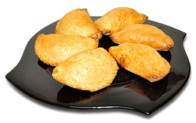

PASTEL MANDIO

INGREDIENTES
Para la masa
- 1Kg de Mandioca hervida
- 1 taza de Harina de Maiz
- 1 Huevo
- 2 cucharadas de Harina de trigo
- 100g de Manteca
- 1/2 Cucharada de sal
Para el relleno
- 1Kg de Carne molida
- 2 Cebollas grandes
- 3 Dientes de Ajo
- 1 Morron
- 1 Cucharada de Comino
- 1 Cucharada de Pimienta
- 2 Huevos duros
- 2 Cebollitas de verdeo
- Sal a gusto